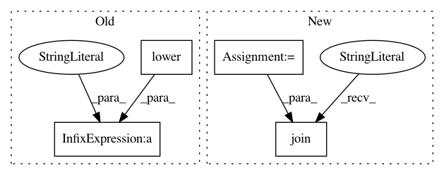

9703fbfccc01c0a1d0f9ed5500c0d1c134d5d8be,dlpy/model_conversion/write_sas_code.py,,write_input_layer,#Any#Any#Any#Any#Any#Any#,23
Before Change
code_string = ("import sys \n"
"\n"
"def " + model_name.lower() +
"_model(s, input_crop_type=None, input_channel_offset=None, input_image_size=None):\n"
"\n"
" // quick error-checking and default setting \n"
" if (input_crop_type is None): \n"
" input_crop_type="NONE" \n"
" else: \n"
" if (input_crop_type.upper() != "NONE") and (input_crop_type.upper() != "UNIQUE"): \n"
" sys.exit("ERROR: input_crop_type can only be NONE or UNIQUE") \n"
" \n"
" if (input_channel_offset is None): \n"
" print("INFO: setting channel mean values to ImageNet means") \n"
" input_channel_offset = [103.939, 116.779, 123.68] \n"
" \n"
" if (input_image_size is not None): \n"
" channels = input_image_size[0] \n"
" if (len(input_image_size) == 2): \n"
" height = width = input_image_size[1] \n"
" elif (len(inputImageSize) == 3): \n"
" height,width = input_image_size[1:] \n"
" else: \n"
" sys.exit("ERROR: input_image_size must be a tuple with two or three entries") \n"
" \n"
" // instantiate model \n"
" s.buildModel(model=dict(name="" + model_name + "",replace=True),type="CNN") \n"
" \n"
" // input layer \n"
" s.addLayer(model="" + model_name + "", name="" + layer_name + "", \n"
" layer=dict( type="input", nchannels=" + channels + ", width=" + width + ", height=" + height + ", \n"
" scale = " + scale + ", randomcrop=input_crop_type, offsets=input_channel_offset))")
After Change
String representing Python code defining a SAS deep learning input layer
"""
out = [
"import sys",
"",
"def " + model_name.lower() + "_model(s, input_crop_type=None, input_channel_offset=None, input_image_size=None):",
"",
" // quick error-checking and default setting",
" if (input_crop_type is None):",
" input_crop_type="NONE"",
" else:",
" if (input_crop_type.upper() != "NONE") and (input_crop_type.upper() != "UNIQUE"):",
" sys.exit("ERROR: input_crop_type can only be NONE or UNIQUE")",
"",
" if (input_channel_offset is None):",
" print("INFO: setting channel mean values to ImageNet means")",
" input_channel_offset = [103.939, 116.779, 123.68]",
"",
" if (input_image_size is not None):",
" channels = input_image_size[0]",
" if (len(input_image_size) == 2):",
" height = width = input_image_size[1]",
" elif (len(inputImageSize) == 3):",
" height,width = input_image_size[1:]",
" else:",
" sys.exit("ERROR: input_image_size must be a tuple with two or three entries")",
"",
" // instantiate model",
" s.buildModel(model=dict(name=" + repr(model_name) + ",replace=True),type="CNN")",
"",
" // input layer",
" s.addLayer(model=" + repr(model_name) + ", name=" + repr(layer_name) + ",",
" layer=dict( type="input", nchannels=" + channels + ", width=" + width + ", height=" + height + ",",
" scale = " + scale + ", randomcrop=input_crop_type, offsets=input_channel_offset))"
]
return "\n".join(out)
// convolution layer definition
def write_convolution_layer(model_name="sas", layer_name="conv", nfilters="-1",
In pattern: SUPERPATTERN
Frequency: 3
Non-data size: 4
Instances
Project Name: sassoftware/python-dlpy
Commit Name: 9703fbfccc01c0a1d0f9ed5500c0d1c134d5d8be
Time: 2018-02-22
Author: leo.liu@sas.com
File Name: dlpy/model_conversion/write_sas_code.py
Class Name:
Method Name: write_input_layer
Project Name: pytorch/pytorch
Commit Name: 7494f0233aabb5109e068f3cad73e20dc6a8dd23
Time: 2021-01-21
Author: ansley@fb.com
File Name: torch/fx/graph.py
Class Name:
Method Name: _snake_case
Project Name: hellohaptik/chatbot_ner
Commit Name: 9956e7687389f4f7cd16693255cb912c7da2f378
Time: 2018-07-23
Author: jain.chirag925@gmail.com
File Name: ner_v1/detectors/textual/text/text_detection.py
Class Name: TextDetector
Method Name: detect_entity